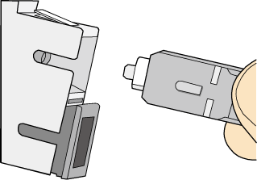
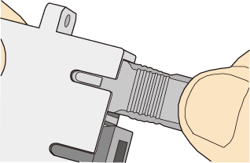

Installing the SC Fiber Connector
Procedure
- Remove the dustproof cap of the SC fiber connector and store it for future use.
- Align the core pin of the male connector with that of the female connector, as shown in Figure Aligning the male connector with the female connector.
Figure 1 Aligning the male connector with the female connector
- Feed the fiber connector into the female connector, with your fingers holding the shell of the fiber connector (not the pigtail). When you hear a click, the fiber connector is secured by the clips (internal parts, not illustrated in the figure). Pull the fiber connector gently. If the connector does not loosen, the installation is complete. See Figure Installed SC fiber connector.
Figure 2 Installed SC fiber connector
- To disassemble an SC fiber connector, hold the shell of the connector (do not hold the fiber) and gently pull the connector in the direction vertical to the adapter. Unlock the male connector, and then separate it from the shell, as shown in Figure Disassembling an SC fiber connector.
Figure 3 Disassembling an SC fiber connector